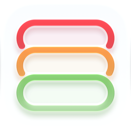

Rows has no servers, no account system, and no analytics, so I never see your data. It lives on your device and syncs between your devices through your own private iCloud.
Rows reads Apple Health data (with your permission) to automatically check off habits. It only reads, never writes, and never sends your Health data to me or anyone else. Subscriptions are billed and managed entirely by Apple.
Rows does not collect, transmit, or sell any personal data. Every habit, log entry, streak, and setting you create is stored in the app's local storage on your device (and shared on-device with the Rows widget via an App Group container, so your widget can show the same data). If you are signed in to iCloud, it is also synced between your devices through your private iCloud space (see section 4). None of it is sent to me or to any third party, because Rows has no backend server of its own to send it to.
Rows sends local notifications (reminders, streak nudges) that are scheduled and delivered entirely on your device. It does not use push notifications to message you. Apple's iCloud service may send silent background updates to keep your devices in sync, which carry no message content.
If you grant permission, Rows reads step count, sleep, workout, and other activity data from Apple Health so it can automatically mark linked habits as complete. This access is read-only in normal use.
You can review or revoke Rows' Health access at any time in the Apple Health app under Sharing → Apps → Rows, or in Settings → Privacy & Security → Health → Rows on your device.
Rows Premium is an auto-renewable subscription (monthly or yearly) processed entirely through Apple's App Store billing (StoreKit). Rows checks your subscription status on-device using Apple's own transaction records — we never see or store your payment details, billing address, or card information; Apple handles all of that under its own privacy policy.
Your subscription automatically renews for the same length and price unless you cancel at least 24 hours before the end of the current period. Manage or cancel anytime in Settings → [your name] → Subscriptions on your device.
Your habits, logs, streaks, and preferences are stored on your device, plus a local App Group container so the Rows widget can read the same data. There is no Rows account to log into.
iCloud sync. Rows syncs your data between your devices using Apple's iCloud (a CloudKit private database tied to your Apple Account). Sync is on whenever you are signed in to iCloud. It includes:
Synced data is stored in your private iCloud space. I cannot access it, and Apple's iCloud terms and privacy policy apply to it. You can manage iCloud for Rows in your device's iCloud settings. Rows does not copy your step counts, sleep data, or other Apple Health measurements into iCloud.
Because of sync, deleting the Rows app removes the data from that device only. See section 6 for how to delete your iCloud copy.
Rows is not directed at children under 13 and is not listed in the Kids Category. Because Rows does not collect any data from any user, it does not knowingly collect personal information from children.
If Rows' data practices change — for example, if a future version adds an account or sends data anywhere new — this policy will be updated first, with a new effective date above, before that change ships.
Questions about this policy or your data can be sent to noahtodd07@icloud.com.